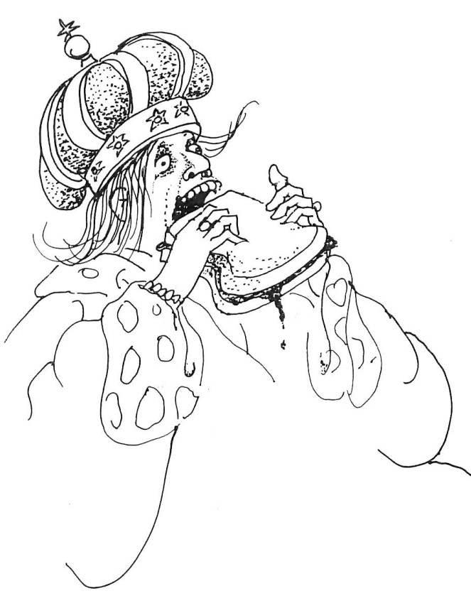
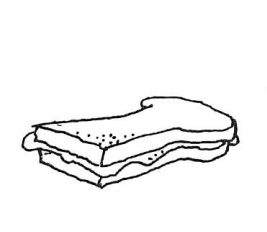

<!DOCTYPE html>
<html lang="en"></html>

<head>
<link href="//db.onlinewebfonts.com/c/7331967d95384e6ed32d24d8cc20499e?family=Geometric+Slabserif+703" rel="stylesheet" type="text/css"/>
<meta charset=utf-8>
<title>Peanut Butter Sandwhich</title>
<link href="css/PBsandwhich.css" rel="stylesheet">
</head>

<style>
main
{
 column-count: 3;
 column-gap: 10%;
 column-rule: 2px solid black;
 margin-top: 2%;
 border: 8px ridge gray;
 padding-top: 1%;
 padding-bottom: 1%;
 background-image: url(media_PBS/grey-paper-texture.jpg);
}
 
header
{
    font-family: 'Geometric Slabserif 703',regular ;
    background-image:url(media_PBS/edge.png);
    background-repeat: no-repeat;
    background-position: left top;  
    background-size: 380px;
    padding-left: 2%;
    padding-top: 10px;
    margin-bottom: -1%;
    background-position-x: 500px;
}

article
{
   font-family: 'Geometric Slabserif 703',regular ;
   font-weight: 900;
   line-height: 23px;
   padding: 10%;
}

.backB{
  font-family: info;
  color: white;
  border: 2px black solid; 
  padding-left: 10px; 
  padding-right: 10px; 
  padding-top: 3px; 
  padding-bottom: 3px; 
  background-color:white; 
  text-decoration: none;
}

.backB:hover{
  background-color:rgba(128, 128, 128, 0.5);

}

.backB:visited{
  color: black;
}

</style>

<body>
    <header>
        <h1>Peanut-Butter Sandwich</h1>
        A poem from "Where the Sidewalk Ends"<br>
        <h2>Written & Illustrated by Shel Silverstein</h2>
    </header>
	<main>
		<article>			
            <p>
            <a href="media_PBS/TheKing.jpg" target="_blank">
            </a>
            </p&nbsp;>
            <p>
            I'll sing you a poem of a silly young king<br>
            Who played with the world at the end of a string,<br>
            But he only loved one single thing—<br>
            And that was just a peanut-butter sandwich.<br>
            </p>
            <p>
            His scepter and his royal gowns,<br>
            His regal throne and golden crowns<br>
            Were brown and sticky from the mounds<br>
            And drippings from each peanut-butter sandwich.<br>
            </p>
            <p>
            His subjects all were silly fools<br>
            For he had passed a royal rule<br>
            That all that they could learn in school<br>
            Was how to make a peanut-butter sandwich.<br>
            </p>
            <p>
            He would not eat his sovereign steak,<br>
            He scorned his soup and kingly cake,<br>
            And told his courtly cook to bake<br>
            An extra-sticky peanut-butter sandwich.<br>
            </p>
            <p>
            And then one day he took a bit<br>
            And started chewing with delight,<br>
            But found his mouth was stuck quite tight<br>
            From that last bite of peanut-butter sandwich.<br>
            </p>
            <p>
            His brother pulled, his sister pried,<br>
            The wizard pushed, his mother cried,<br>
            "My boy's committed suicide<br>
            From eating his last peanut-butter sandwich!"<br>
            </p> 
            <p>
            The dentist came, and the royal doc.<br>
            The royal plumber banged and knocked,<br>
            But still those jaws stayed tightly locked.<br>
            Oh darn that sticky peanut-butter sandwich!<br>
            </p>
            <p>
            The carpenter, he tried with pliers,<br>
            The telephone man tried with wires,<br>
            The firemen, they tried with fire,<br>
            But couldn't melt that peanut-butter sandwich.<br>
            </p>
            <p>
            With ropes and pulleys, drills and coil,<br>
            With steam and lubricating oil—<br>
            For twenty years of tears and toil—<br>
            They fought that awful peanut-butter sandwich.<br>
            </p>
            <p>
            Then all his royal subjects came.<br>
            They hooked his jaws with grapplin' chains<br>
            And pulled both ways with might and main<br>
            Against that stubborn peanut-butter sandwich.<br>
            </p>
            <p>
            Each man and woman, girl and boy<br>
            Put down their ploughs and pots and toys<br>
            And pulled until kerack! Oh, joy—<br>
            They broke right through that peanut-butter sandwhich<br>
            </p>
            <p>
            A puff of dust, a screech, a squeak—<br>
            The king's jaw opened with a creak.<br>
            And then in voice so faint and weak—<br>
            The first words that they heard him speak<br>
            Were, "How about a peanut-butter sandwich?"<br>
            </p>
            <p>
            <a href="media_PBS/PBsandwhich.jpg" target="_blank">
            </a>
            </p&nbsp;>
            <p>
		</article>
	</main>
    <p style="text-align: center;"><a href="index.html" class="backB">Back to Main</a></p>
    <footer style="padding-left: 1%; padding-right: 1%;">
        <hr style= "height: 2px; border-style: double;">
        <cite><small>sources<br>
        <a href="http://www.onlinewebfonts.com">oNline Web Fonts</a><br>
        <a href="https://genius.com/Shel-silverstein-peanut-butter-sandwich-annotated"target="_blank">Peanut Butter Sandwhich</a><br>
        <a href="https://www.rivendellschool.net/editoruploads/files/Peanut_Butter_Sandwich.pdf"target="_blank">Poem Images</a><br>
        <a href="https://www.shelsilverstein.com/about-shel/"target="_blank">About Shel Silverstein</a><br></small></cite>
        <hr style= "height: 2px; border-style: double;">
    </footer>
</body>